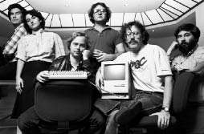

Gerçekliği Çarpıtma Sahası
Kendi Kurallarıyla Oynayan

1984’teki orijinal Mac ekibi: George Crow, Joanna Hoffman,
Burrell Smith, Andy Hertzfeld, Bill Atkinson ve Jerry Manock.
Andy Hertzfeld Mac ekibine katıldığında, diğer yazılım tasarımcısı Bud Tribble ona yapılması gereken birçok iş hakkında brifing vermişti. Jobs işin Ocak 1982’ye kadar, yani bir yıldan az sürede bitirilmesini istiyordu. “Bu çok saçma,” dedi Hertzfeld. “Mümkün değil.” Tribble, Jobs’ın fikrinin değişmeyeceğini söyledi. “Durumu en iyi açıklayan şey bir Uzay Yolu terimi,” dedi Tribble. Hertzfeld şaşkınlığını ifade edince Tribble açıklama yaptı. “Jobs’ın olduğu yerde gerçeklik değiştirilebilir. O herkesi her şeye ikna edebilir. O yokken bu etki kayboluyor, ama gerçekçi zaman hedefleri belirlemek zor oluyor.”
Tribble bu terimi Uzay Yolu’nun ünlü “Vahşi Hayvan Koleksiyonu” bölümlerinden hatırladığını anımsıyor; bu bölümlerde “uzaylılar zihin güçleriyle yeni dünyalarını yaratıyorlardı.” Bu terimi kullanırken amacının sadece uyarıda bulunmak değil övmek olduğunu söylüyor. “Steve’in çarpıtma sahasında kısılı kalmak tehlikeliydi, ama gerçekliği değiştirebilmesini sağlayan tam da o oldu.”
Hertzfeld başta Tribble’ın herhalde abarttığını düşündü. Ama Jobs’ın çalışmasını iki hafta gözlemlemek bu fenomeni bariz bir şekilde görmesine yetti. “Gerçekliği çarpıtma sahası karizmatik bir belagat tarzının, boyun eğmez bir iradenin ve her gerçeği hedefe uygun şekilde çarpıtma hevesinin şaşırtıcı bir karışımıydı,” diyor. “Bir argümanla ikna edemezse hemen bir başkasına geçiyordu. Bazen birden senin savunduğun şeyi savunarak, sanki tersini hiç savunmamış gibi yaparak şaşırtıyordu.”
Hertzfeld bu güçten korunmanın pek mümkün olmadığını keşfetti. “Görünüşe göre gerçekliği çarpıtma sahası onun farkında olsanız bile etkili oluyor tuhaf bir şekilde,” diyor. “Onu etkisizleştirmeye yönelik potansiyel teknikler üstüne konuşuyorduk sık sık, ama sonunda çoğumuz vazgeçtik, onu bir doğa kuvveti olarak kabul ettik.” Jobs’ın ofis buzdolabındaki gazozların yerini Odwalla marka organik portakal ve havuç sularının almasını emretmesinden sonra ekipten biri tişörtler yaptırdı. Bu tişörtlerin ön yüzünde “Gerçekliği Çarpıtma Sahası”, arka yüzündeyse “Meyve suyunda!” yazısı vardı.
Gerçekliği çarpıtma sahası terimi, Jobs’ın yalana meyilli olduğunu söylemenin alengirli bir yoluydu bir bakıma. Ama Jobs’ın kullandığı yöntem aslında gerçek hedeflerini gizlemenin karmaşık bir yoluydu. Bazı şeyleri doğru olup olmadıklarına aldırmadan öne sürüyordu –ister dünya tarihiyle ilgili olsunlar, ister bir toplantıda ortaya atılan bir fikrin kime ait olduğuyla–. Gerçekliği bilerek reddediyordu, sadece başkalarına değil kendine karşı da. “Kendini kandırabiliyor,” diyor Bill Atkinson. “İnsanları kandırıp kendi vizyonuna inandırabiliyor, çünkü bu vizyonu bizzat benimseyip içselleştirmiş oluyor.”
Birçok insan gerçekliği çarpıtır elbette. Jobs bunu genellikle bir hedefe ulaşmak için, taktik niyetine yapıyordu. Jobs ne kadar taktikçiyse, Wozniak o kadar dürüst mizaçlıydı ve Jobs’ın taktiklerinin çok etkili olabilmesine şaşıyordu. “Gerçekliği çarpıtması geleceğe dair mantıksız bir vizyon kurduğunda gerçekleşiyor, örneğin Breakout oyununu sadece birkaç günde tamamlayabileceğimi söylüyor. Bunun doğru olamayacağını biliyorsun, ama doğru kılıyor bir şekilde.”
Mac ekibinin üyeleri Jobs’ın gerçekliği çarpıtma sahasına takılınca neredeyse hipnotize oluyorlardı. “Bana Rasputin’i anımsatıyordu,” diyor Debi Coleman. “Lazer ışınını üstüne çevirdi mi gözlerini bile kırpamıyordun. Mor Kool-Aid verse bile fark etmiyordu. İçiyordun.” Ama Wozniak gibi Coleman da gerçekliği çarpıtma sahasının güçlendirici olduğuna inanıyor: Jobs’ın ekibine, Xerox’un ve IBM’in olanaklarının çok azına sahip olmalarına karşın, bilgisayar tarihinin akışını değiştirme şevkini aşılayabilmesini sağladı. “Kendini gerçek kılan bir çarpıtmaydı,” diye iddia ediyor Coleman. “İmkânsızı başarıyordun, çünkü imkânsız olduğunu fark etmiyordun.”
Gerçekliği çarpıtmanın temelinde Jobs’ın kuralların kendisine işlemediğine dair derin ve sarsılmaz inancı vardı. Bunun bazı kanıtlarına sahipti; çocukluğunda gerçekliği arzularına göre bükebilmişti sık sık. Ama kurallara boşverebileceği inancının daha da derin kaynağı, kişiliğine işlemiş olan asiliği ve başına buyrukluğuydu. Özel olduğunu hissediyordu: seçilmiş ve aydınlanmış biri olduğunu. “Çok az özel insan –kendisi, Einstein, Gandi ve Hindistan’da tanıştığı gurular– bulunduğuna ve kendisinin onlardan biri olduğuna inanıyor,” diyor Hertzfeld. “Chrisann’e öyle demiş. Hatta bir keresinde bana aydınlanmış olduğunu ima etti. Nietzsche gibi neredeyse.” Jobs Nietzsche’yi asla incelememişti, ama filozofun güç istenci kavramı ve Überman’ının özel doğası ona yakın geliyordu. Böyle Buyurdu Zerdüşt: “Ruh artık kendi istencini istenciyle yaratır ve dünyanın yitirdiği kişi artık dünyayı fetheder.” Jobs istencine uymayan gerçekliği görmezden geliyordu, tıpkı kızı Lisa doğduğunda ve yıllar sonra kendisine ilk kez kanser teşhisi konduğunda yaptığı gibi. Arabasına plaka takmamak ve onu trafiği engelleyecek yerlere park etmek gibi ufak tefek gündelik isyan eylemlerinde bile, çevresindeki dünyanın kurallarına ve gerçekliklerine tabi değilmiş gibi davranıyordu.
Jobs’ın dünya görüşünün bir başka kilit noktası ikili kategorizasyon yapmasıydı. İnsanlar ya “aydınlanmış” ya da “göt”tüler. Ortaya koydukları işler ya “en iyi” ya da “tamamen boktan”dı. Bu dikotomilerin olumlu tarafında yer alan Mac tasarımcısı Bill Atkinson, meseleyi şöyle anlatıyor:
Steve’in emrinde çalışmak zordu, çünkü insanları tanrılar ve bok kafalılar olarak ikiye ayırmıştı. Tanrıysanız yüceydiniz ve asla hata yapamazdınız. Tanrılardan saydığı ben ve benim gibi kişiler aslında ölümlü olduğumuzu, kötü mühendislik kararları verdiğimizi ve herkes gibi osurduğumuzu biliyorduk, dolayısıyla Steve’in gözünden düşmekten korkuyorduk hep. Çok çalışan parlak mühendisler olan bok kafalılarsa takdir edilmelerinin ve terfi etmelerinin mümkün olmadığını hissediyorlardı.
Ama bu kategoriler değişmez değildi. Jobs özellikle insanlardan değil de fikirlerden bahsederken bir anda fikrini değiştirebiliyordu. Tribble, Hertzfeld’e gerçekliği çarpıtma sahası konusunda brifing verirken onu Jobs’ın yüksek voltajlı alternatif akıma benzediği konusunda özellikle uyardı. “Sana bir şeyin berbat ya da muhteşem olduğunu söylemesi, yarın da öyle düşüneceği anlamına gelmez,” diye açıkladı Tribble. “Ona yeni bir fikir söylersen, salakça bulduğunu söyler büyük ihtimalle. Ama cidden beğenirse tam bir hafta sonra geri gelip senin fikrini sana önerir, sanki kendisi akıl etmiş gibi.”
Bu son piruet tekniğindeki arsızlık Dyagilev’in bile başını döndürürdü. “Bir argümanla ikna edemezse hemen bir başkasına geçiyordu,” diye açıklıyor Hertzfeld. “Bazen birden senin savunduğun şeyi savunarak, sanki tersini hiç savunmamış gibi yaparak şaşırtıyordu.” Xerox PARC’tan gelmeye Tesler’la birlikte ikna edilmiş yazılımcı Bruce Horn defalarca yaşadı bunu. “Ona aklıma gelen bir fikri söylüyordum, işe yaramaz diyordu,” diyor Horn. “Ertesi hafta gelip ‘Hey, aklıma harika bir fikir geldi,’ diyerek benim fikrimi söylüyordu! ‘Steve, bunu ben sana geçen hafta söyledim,’ dediğimdeyse ‘Hı hı, hı hı,’ diyerek uzaklaşıyordu.”
Jobs’ın beyin devrelerinde, aklına geliveren uçuk fikirleri modüle edecek bir cihaz eksikti sanki. Dolayısıyla Mac ekibi, onunla uğraşırken “alçak geçiş filtresi” adlı bir ses kavramını benimsediler. Jobs’tan gelen verileri işlerken, yüksek frekanslı sinyallerinin genliğini azaltmayı öğrendiler. Böylece veri setini düzenleyebiliyor ve Jobs’ın değişken tavırlarının etkisini daha az hissediyorlardı. “Bir aşırı uçtan diğerine geçmesine birkaç kez tanık olduktan sonra,” diyor Hertzfeld, “sinyallerini alçak geçiş filtresinden geçirmeyi ve aşırılıklarına tepki vermemeyi öğrendik.”
Jobs’ın filtrelenmemiş davranışlarının sebebi duygusal hassasiyet eksikliği miydi? Hayır. Neredeyse tam tersiydi. Duygularında oldukça odaklıydı. İnsanların içini okumada, psikolojik güçlerini ve zayıflıklarını ve güvensizliklerini saptamada şaşılacak kadar başarılıydı. Bundan habersiz bir kurbanı duygu yüklü bir aparkatla darmadağın edebiliyordu. Bir insanın gerçekten bir şeyler mi bildiğini, yoksa numara mı yaptığını sezebiliyordu. Bu, başka insanları kandırmakta, pohpohlamakta, ikna etmekte, gözlerine girmekte ve onları sindirmekte usta olmasını sağlıyordu. “En zayıf noktanı, neyin kendini küçük hissetmene yol açacağını, neyin seni irkilteceğini tam olarak bilebiliyordu tuhaf bir şekilde,” diyor Hoffman. “İnsanları manipüle etmeyi bilen karizmatik kişilerin ortak özelliğidir bu. Seni ezebileceğini bilmen kendini zayıf hissetmene ve onun onayını almak istemene yol açıyordu, böylece seni yüceltip sahibin olabiliyordu.”
Bunun bazı avantajları vardı. Ezilmeyen insanlar sonunda güçleniyorlardı. Daha iyi çalışıyorlardı, hem korkudan, hem memnun etme arzusundan, hem de kendilerinden bunun beklendiğini bildiklerinden. “Tavrı duygusal açıdan yıpratıcı olabiliyor, ama sağ salim atlatabilirseniz işe yarıyor,” diyor Hoffman. Mücadele de edebilirdiniz –bazen– ve sağ salim kurtulmakla kalmayıp başarılı olabilirdiniz. Bu her zaman işe yaramıyordu; Raskin denedi ve bir süre başarılı oldu, sonra da mahvoldu. Ama sakin bir şekilde özgüvenli ve haklıysanız, Jobs sizi tartıp da ne yaptığınızı bildiğinize karar vermişse, size saygı duyardı. Yıllar geçtikçe hem kişisel, hem de mesleki hayatındaki tanıdık çevresi zayıftan çok güçlü insanları içerdi giderek.
Mac ekibi bunu biliyordu. 1981’den başlayarak her yıl, Jobs’a en iyi karşı gelen kişiye ödül verdiler. Bu ödül kısmen şakaydı, ama kısmen de ciddiydi; Jobs bunu biliyordu ve hoşuna gidiyordu. İlk yıl ödülü Joanna Hoffman kazandı. Doğu Avrupalı bir mülteci aileden gelmeydi, çabuk parlayan ve güçlü iradeli biriydi. Örneğin bir gün Jobs’ın onun pazarlama tahminlerini, gerçeği tamamen çarpıttığını düşündüğü bir şekilde değiştirdiğini keşfetti. Jobs’ın ofisine hışımla daldı. “Merdiveni çıkarken asistanına elime bir bıçak alıp Steve’in kalbine saplayacağımı söyledim,” diye anlatıyor. Şirketin hukuk müşaviri Al Eisenstat onu zapt etmeye koştu. “Ama Steve sesimi duydu ve geri adım attı.”
Hoffman ödülü 1982’de de kazandı. “Joanna’yı kıskandığımı hatırlıyorum, çünkü Steve’e karşı gelebiliyordu, bense henüz çekiniyordum,” diyor o yıl Mac ekibine katılan Debi Coleman. “Sonra 1983’te ödülü kazandım. İnandığınız şeyi savunmanız gerektiğini öğrenmiştim ve Steve buna saygı duyuyordu. Sonrasında beni terfi etmeye başladı.” Coleman sonunda üretim departmanının başına getirildi.
Jobs bir gün Atkinson’ın mühendislerinden birinin ofis kabinine daldı ve her zamanki gibi “Bu boktan,” dedi. Atkinson şöyle hatırlıyor: “Adam ‘Hayır değil, aslında en iyisi bu,’ dedi ve Steve’e yaptığı işin mühendislik açısından getirilerini açıkladı.” Jobs geri adım attı. Atkinson ekibine Jobs’ın sözlerini tercüme etmeyi öğretti. “‘Bu boktan,’ dediğinde aslında ‘Bana en iyi yolun neden bu olduğunu söyle,’ dediğini öğrendik.” Ama Atkinson bu öykünün sonunu da eğitici buluyordu. O mühendis sonunda Jobs’ın eleştirdiği fonksiyonu daha da iyi bir şekilde kotarmanın yolunu buldu. “İşini daha da iyi yaptı, çünkü Steve ona meydan okumuştu,” diyor Atkinson, “ve bu, ona karşı gelebileceğinizi, ama bir yandan da kulak vermeniz gerektiğini, çünkü onun genellikle haklı olduğunu gösteriyor.”
Jobs’ın huysuzluğu mükemmeliyetçiliğinden ve bir ürünü zamanında veya bütçeye uygun şekilde üretmek adına pratikte tavizler vermeye razı olan insanlardan hazzetmeyişinden –bu tavizler mantıklı olsalar bile– kaynaklanıyordu kısmen. “Uzlaşmaya pek açık değildi,” diyor Atkinson. “Kontrol tutkunu bir mükemmeliyetçiydi. Ürünlerinin kusursuz olup olmamasını umursamayan insanları beceriksiz olarak görüyordu.” Örneğin Nisan 1981’deki West Coast Bilgisayar Fuarı’nda Adam Osborne ilk gerçekten taşınabilir kişisel bilgisayarı sergiledi. Bu makine muhteşem değildi –ekranı beş inçti ve belleği düşüktü–, ama iyi kötü çalışıyordu. Osborne’un şu sözü ünlü oldu: “Yeterlilik yeterlidir. Diğer her şey fazlalıktır.” Bu fikri ahlâki açıdan son derece berbat bulan Jobs ise Osborne’la günlerce dalga geçti. “Herifin kafası basmıyor ki,” deyip durdu Apple’ın koridorlarında dolanırken. “Sanat değil bok üretiyor.”
Jobs bir gün Macintosh işletim sisteminin üstünde çalışan Larry Kenyon’ın ofis kabinine daldı ve sistemin yüklenmesinin çok uzun sürdüğünden yakındı. Kenyon açıklama yapacak oldu, ama Jobs onun sözünü kesti. “Bir insanın hayatı söz konusu olsa, sistemin yüklenme süresini on saniye kısaltmanın yolunu bulur muydun?” Kenyon muhtemelen bulacağını kabul etti. Jobs bir beyaztahtaya gitti ve Mac’i kullanan beş milyon insan varsa ve her biri bilgisayarını açmaya fazladan on saniye harcıyorsa, bu insanların yılda toplam 300 milyon saat civarı zaman tasarrufu yapabileceklerini ve bunun yılda en az 100 ömür süresi kadar tasarrufa eşit olduğunu gösterdi. “Larry etkilendi elbette ve birkaç hafta sonra geri geldiğinde sistem 28 saniye hızlı açılıyordu,” diye anımsıyor Atkinson. “Steve geniş bir perspektiften bakarak insanları motive edebiliyordu.”
Bunun sonucunda Macintosh ekibi de Jobs gibi sadece kârlı değil, muhteşem bir ürün üretmeyi arzulamaya başladı. “Jobs kendini bir sanatçı olarak görüyordu ve biz tasarım ekibindekilerin de kendimizi öyle görmemizi istiyordu,” diyor Hertzfeld. “Hedef rakipleri geçmek veya tonla para kazanmak değildi asla; olabilecek en muhteşem şeyi, hatta onun biraz daha muhteşemini yaratmaktı.” Jobs ekibi Manhattan’daki Metropolitan Müzesi’ndeki bir Tiffany cam sergisine bile götürdü, çünkü yüksek adetli üretilebilen muhteşem sanat eserleri tasarlamak konusunda Louis Tiffany’yi örnek almalarını istiyordu. “Louis Tiffany’nin bütün bunları elleriyle yapmadığını, tasarımlarını başka insanlara aktarabildiğini konuştuk,” diye anımsıyor Bud Tribble. “Kendimize şöyle dedik: ‘Hey, madem bir şeyler yaratacağız, bari güzel olsunlar.’”
Jobs’ın bütün sinirli ve incitici tavırları gerekli miydi? Muhtemelen değildi ve bu konuda mazereti yoktu. Ekibini başka şekillerde de motive edebilirdi. Her ne kadar sonunda Macintosh gerçekten muhteşem bir ürün olsa da, Jobs’ın küstahca müdahaleleri yüzünden yaratılması epey gecikti ve bütçeyi epey aştı. Ayrıca insanların incinmelerinin de bir bedeli vardı; ekiptekilerin çoğunun işlerinden soğumasına yol açtı. “Steve terör saçmasıyla ünlü olmadan da aynı katkıları yapabilirdi,” diyor Wozniak. “Ben daha sabırlı olmayı ve o kadar kavga gürültü yaşamamayı seviyorum. Bir şirketin iyi bir aile olabileceğini düşünüyorum. Macintosh projesini ben yönetsem batağa saplanırdık herhalde. Ama tarzlarımızın bir karışımı sırf Steve’in tarzından daha iyi olurdu bence.”
Ancak Jobs’ın tarzının bazı avantajları vardı. Apple çalışanlarının çığır açıcı ürünler yaratma tutkusu duymalarını ve imkânsız görünen şeyleri başarabileceklerine inanmalarını sağladı. “Haftada 90 saat çalışıyorum ve buna bayılıyorum!” yazılı tişörtler yaptırdılar. Jobs’tan korkarken bir yandan da onu etkileme arzusuna inanılmayacak kadar yoğun bir şekilde kapılmaları, kendi beklentilerinin ötesine geçmelerini sağladı. Jobs ekibini sadece Mac’in maliyetini düşürecek ve piyasaya daha çabuk sürülmesini sağlayacak bazı tavizlerden değil, genellikle mantıklı gibi görünen kalitesizleştirici tavizler vermekten de alıkoydu.
“Yaşadığım yıllardan şunu öğrendim ki, gerçekten iyi adamlar çalıştırıyorsan onları sıkboğaz etmen gerekmez,” diye açıkladı Jobs sonradan. “Muhteşem şeyler yapmalarını bekleyerek onlara muhteşem şeyler yaptırabilirsin. İlk Mac ekibi bana birinci sınıf oyuncuların birlikte çalışmayı sevdiklerini ve kalitesiz işlere göz yumarsan bunun hoşlarına gitmeyeceğini gösterdi. Mac ekibinden istediğine sor. Sonucun çektikleri acıya değdiğini söylerler.”
Çoğu gerçekten de öyle söylüyor. “Toplantılarda ‘Hiçbir şeyi beceremiyorsun göt,’ diye bağırıyordu,” diye anımsıyor Debi Coleman. “Neredeyse saat başı. Yine de onunla çalıştığım için kendimi dünyanın en şanslı insanı sayıyorum kesinlikle.”